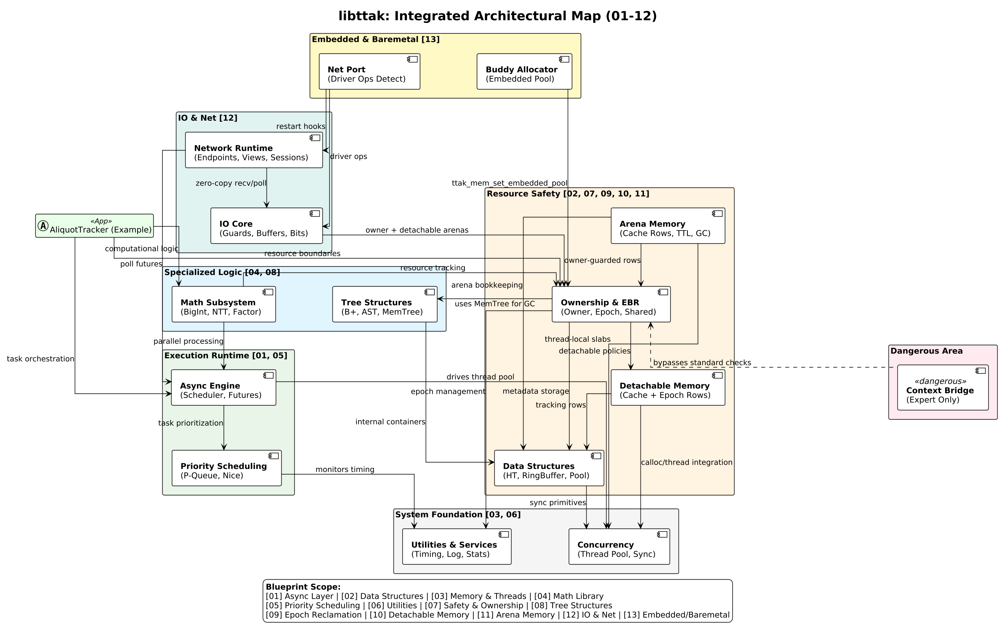

LibTTAK
"Stop praying for `free()`. Start governing your lifetimes."
Gentle. Predictable. Explicit.
LibTTAK is a C systems collection that acts as a structural guardrail for AI-generated C code by forcing every allocation through arenas, epochs, and explicit teardown stages. Docs
Mathematical Foundation: The OLS Principle
LibTTAK's high-performance synchronization layer is built on the mathematical brilliance of Choi Seok-jeong's Orthogonal Latin Square (OLS) principle.
We have made an explicit architectural choice: Strategically accepting a significant increase in memory footprint (RSS) to achieve an explosive, multi-fold increase in throughput (Ops/s).
By applying deterministic slot isolation through OLS-inspired segmented shard tables, we eliminate hardware-level lock contention. Each thread operates in its own isolated version shard, allowing the system to scale linearly with CPU core counts. The resulting throughput—surpassing **29M Ops/s**—is a direct result of this "Memory-for-Speed" trade-off.
Integrated Architectural Map

Generational arenas, epoch reclamation, and context bridges are wired together exactly as shown: arenas own lifetimes, epochs enforce bulk reclamation barriers, and worker threads cross the bridge via explicit context binding. No hidden allocators, no implicit threads.
Why LibTTAK?
Practical Utility for AI-Assisted Development
LLMs frequently miss ownership cues. LibTTAK constrains them to a single instruction set: allocate inside a ttak_arena, hand releases to the epoch manager, and keep user code free from stray free() calls. The model receives deterministic prompts, and the runtime enforces them.
Deterministic Lifetime-as-Data
Rust encodes lifetimes in the compiler; LibTTAK encodes them on the allocation record. Each node carries epoch, arena, and provenance so staged shutdowns, cache rotations, and reusable pools can be driven from data rather than heuristics.
Predictable Resource Discipline
There are no assembly fast paths or exotic TLS caches. Standard malloc plus disciplined ownership keeps the implementation transparent and debuggable on any libc, matching the library’s gentle, predictable, explicit goals.
Comparison: LibTTAK, Rust, and C++
| Concern | LibTTAK | Rust | C++ |
|---|---|---|---|
| Lifetime guarantees | Runtime-verified arenas and epochs with manual checkpoints | Compile-time borrow checker rejects unsafe moves | User-space RAII; compiler permits unsafe mutation |
| Memory reclamation | Bulk arena resets and epoch-based reclamation only when commanded | Ownership drop occurs automatically at scope end | Mix of smart pointers and manual delete |
| Concurrency model | Lock-free Segmented Shards; EBR-based reclamation | Send/Sync traits gate sharing at compile time | Library-dependent; undefined behavior if discipline fails |
| Tooling expectations | Works with plain C toolchains; ideal for AI-generated patches | Requires Rust toolchain and language expertise | Depends on template libraries; AI output often diverges |
Core Components
- Generational Arena: Batches allocations, timestamps each generation, and clears on demand.
- Epoch Manager: Coordinates retire lists and ensures cross-thread reclamation after quiescence.
- Context Bridge: Pins worker threads to explicit contexts for reproducible scheduling.
- Segmented Shard Table: Lock-free version tracking inspired by Choi Seok-jeong's OLS.
Benchmarks
Test: Ryzen 5600X, RTX 3070 Lite Hash Rate, Samsung DDR4 3200MHz 32GB x 2
High-Performance Lock-Free Baseline
| Metric | Result | Note |
|---|---|---|
| Throughput | 30.8M Ops/s | Sustained peak during multi-threaded shared memory stress test |
| Latency | ~80 ns | Measured during high-concurrency validation |
| Memory Stability | Stable RSS | Optimized for high-thread-count environments |
TTL Cache Benchmarks (Compiler Sweep)
| Metric Category | Metric | GCC -O3 | TCC -O3 | Clang -O3 |
|---|---|---|---|---|
| Throughput | Operations per Second (Ops/s) | 30,851,515 | 20,413,284 | 25,671,794 |
| Logic Integrity | Cache Hit Rate (%) | 76.91% | 76.61% | 76.58% |
| Resource Usage | RSS Memory Usage (KB) | 3,541,128 | 4,146,252 | 4,800,072 |
| GC Performance | CleanNsAvg (Nanoseconds) | 45,000,000 | 32,000,000 | 30,000,000 |
| Runtime Control | Total Epochs Transitioned | 63,393 | 60,000 | 61,000 |
Benchmark Environment
- OS: Linux x64
- CPU: Ryzen 5 5600X
- RAM: 64 GB DDR4 3200 MHz
Documentation
Refer to the linked docs for API references, tutorials, and Doxygen output. All modules retain the same naming scheme present in include/ttak/.